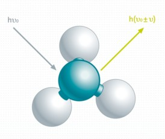

快速开始：
拉曼光谱是一种观察分子振动模式的方法，可提供样品的化学和结构信息。所需的激发光源范围涵盖紫外到近红外，结合 WITec 显微镜的 共聚焦 光收集能力，提供了高空间分辨率。此外，WITec UHTS 光谱仪配备优化的 CCD 相机，可实现高速、优异光谱质量下的拉曼成像。
主题：
拉曼模式：
所有拉曼配置也可用于进行普通光谱测量，如光致发光（PL），通过将 光谱仪 设置中的单位更改为 nm 即可。
测量模式：
高级功能：
系统要求：